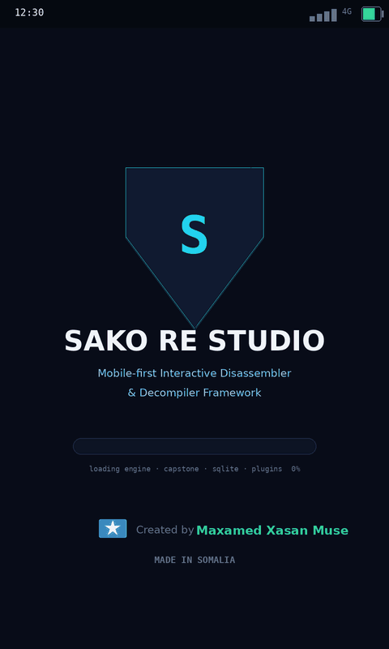

Mobile-first Interactive Disassembler & Decompiler Framework.
The IDA Pro / Ghidra experience — in your pocket. Open any APK, DEX, ELF or PE and explore functions, call graphs, pseudo-C, xrefs and a live debugger — fully offline.


Every rename, comment, bookmark and note is persisted per project in SQLite. Close the app, come back tomorrow — nothing is lost.
Automatic function discovery, real call graph with PLT/GOT/IAT resolution, xrefs, C++ demangler (Itanium + MSVC) and auto-comments for string refs and dangerous APIs.
ASM → IR → pseudo-C: expression trees, register propagation, dead-store elimination, while-loop reconstruction from back edges, if/else diamonds and typed call arguments.
Draggable CFG nodes, zoom & pan, block coloring (entry/exit/branch), search jump and a live minimap with viewport.
Spawn or attach to a PID, software breakpoints (BRK / 0xCC), full register read/write, memory & stack dumps and a thread list.
Binary AXML manifest parsing: package, permissions (risk-flagged ⚠), all components + intent filters, DEX classes, native libs and resources with image preview.
A full scripting language inside the app (vars, if/while/for, functions) with a 20+ function host API. 4 security plugins ship bundled.
Offline heuristic Explain for any function, or plug in your own OpenAI / DeepSeek / Ollama endpoint for full LLM analysis.
13 tabs, command palette (Ctrl+K), search-everywhere (Ctrl+F), goto address (Ctrl+G) and complete keyboard shortcuts — built with Jetpack Compose.
| Container / Format | What you get | Architectures |
|---|---|---|
.apk | Manifest (AXML), permissions, components, DEX classes, native libs, resources | ARM64 · x86_64 |
.dex | Classes, methods as named functions, invoke-based call graph, strings | Dalvik |
ELF32 / ELF64 | Sections, segments, symbols, dynamic, RELA, GOT/PLT resolution | ARM64 · x86-64 · ARM |
PE32+ | Sections, imports/exports, IAT slot resolution, entry point | x86-64 |
Yes — free and open source under the MIT license. The signed APK is on the GitHub Releases page.
No. All static analysis (disassembly, decompilation, APK analysis, graphs, plugins) runs without root. Only the ptrace debugger needs a rooted or debuggable device.
APK (manifest + DEX + libs + resources), DEX, ELF32/ELF64 and PE32+ — targeting ARM64, x86-64 and ARM code.
It is a mobile-first interactive disassembler & decompiler framework inspired by IDA Pro and Ghidra: function discovery, xrefs, call graph, IR decompiler, debugger and a plugin language — all offline on your phone.
Sako RE Studio waa qalab reverse engineering oo buuxa oo mobile-ka lagu shaqeeyo: disassembler, decompiler (ASM → IR → pseudo-C), call graph, CFG graph, debugger (ptrace), APK analyzer iyo nidaam plugins (SakoScript) — dhammaantood isku hal app ku dhex jira, oo internet la'aan shaqeeya.
Waa IDA Pro ama Ghidra — laakiin telefoonkaada gacanta ku jira. Waxaa si buuxda ah u sameeyay horumariye Soomaaliyeed: Maxamed Xasan Muse 🇸🇴 — waa qalabkii ugu horreeyay ee noocaan ah oo ka soo saarma Soomaaliya.